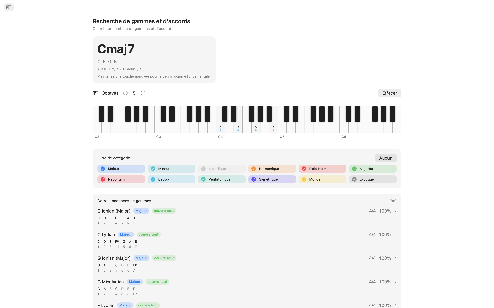
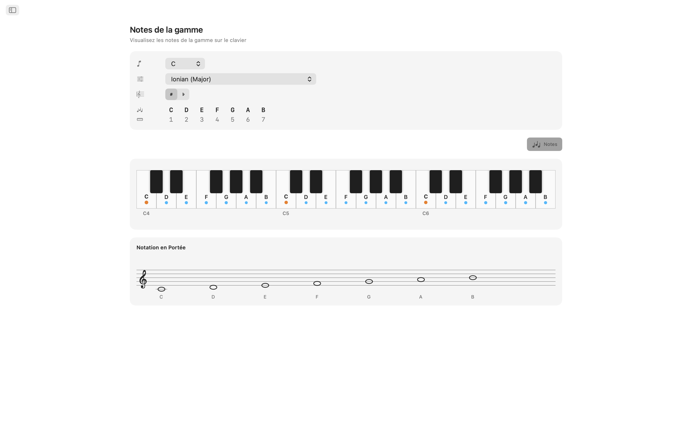
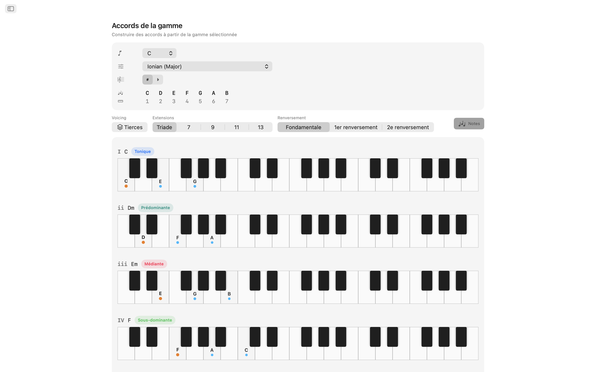
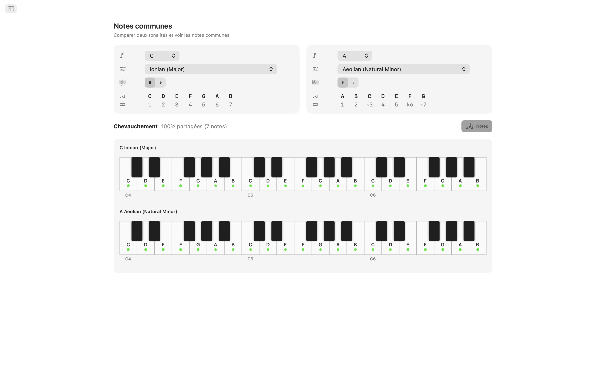
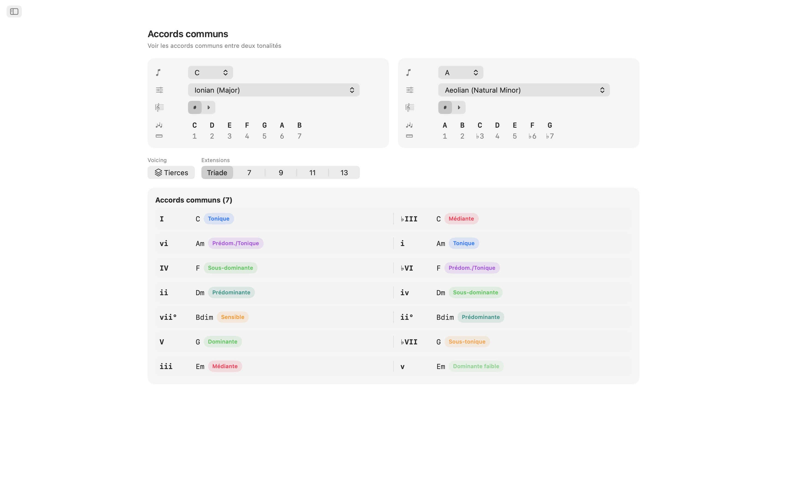
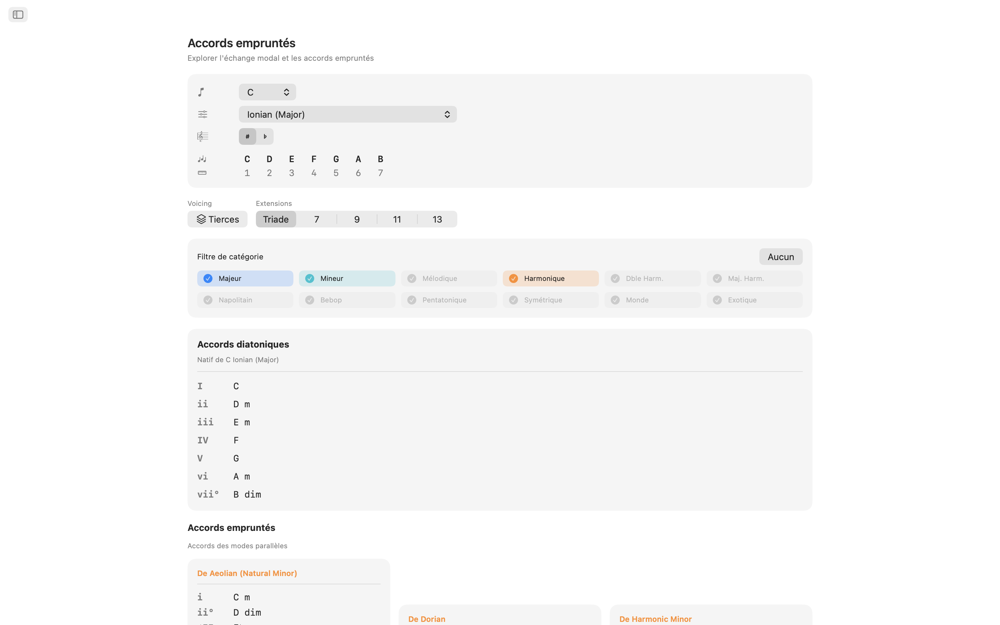
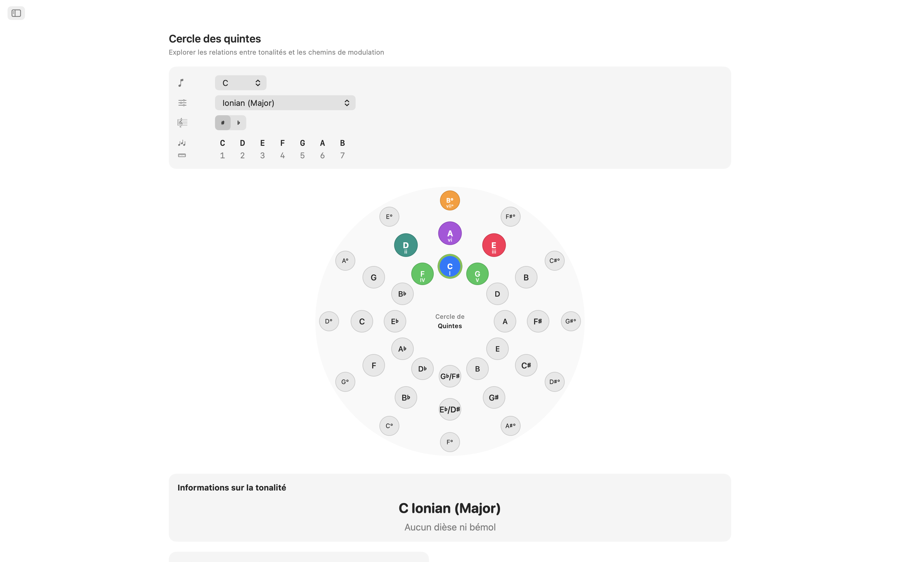
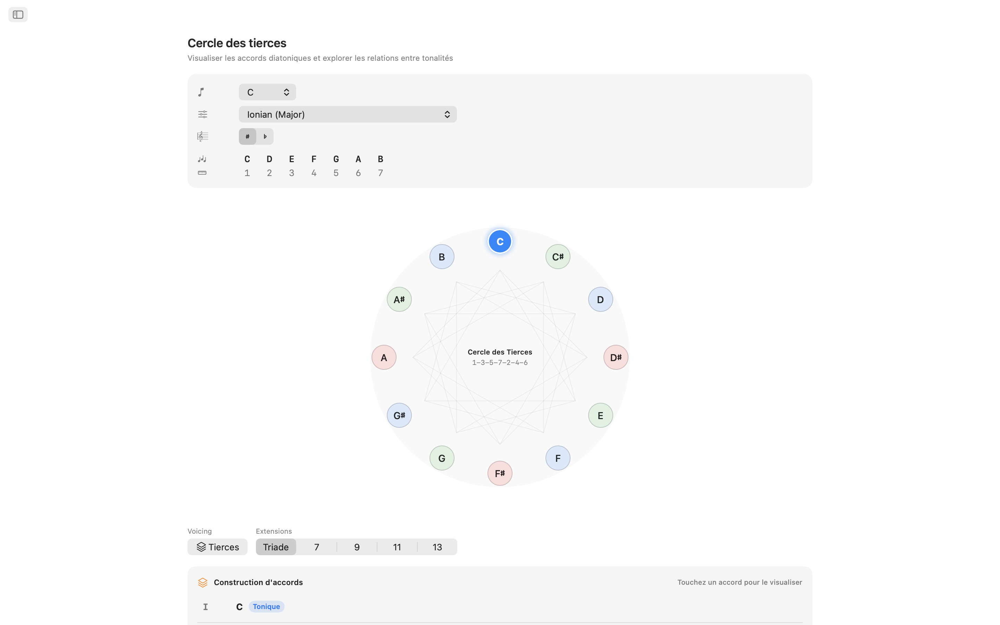
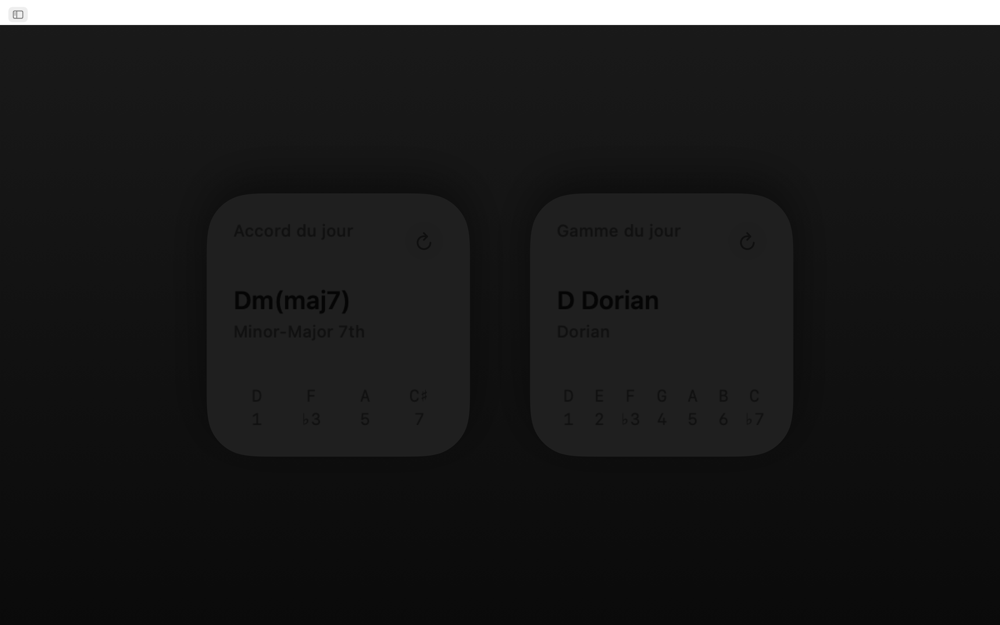
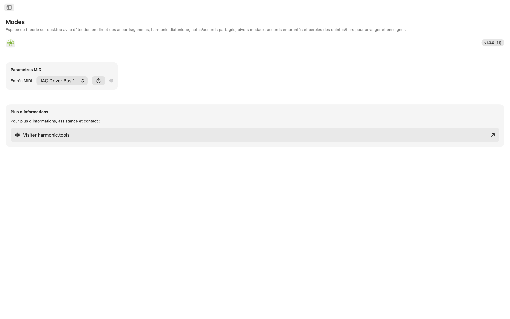

Modes pour macOS
Un laboratoire de théorie musicale pratique pour macOS. Que vous écriviez une chanson, prépariez un cours ou exploriez de nouveaux territoires harmoniques, Modes vous donne un accès instantané aux gammes, accords, voicings et chemins de modulation le tout dans une application claire, avec navigation par barre latérale, qui se place à côté de votre DAW. Désormais avec Siri, Shortcuts, la recherche Spotlight et des widgets du Notification Center.
- Détecteur de gammes et accords avec MIDI + clavier à l'écran
- 65 gammes · 21 types d'accords · 8 familles de voicings
- Notes partagées, accords partagés, accords empruntés
- Cercle des quintes interactif + cercle des tierces
- Siri, Shortcuts, Spotlight et widgets du Notification Center
Captures d'écran
Comprend des captures en mode clair et sombre qui suivent le thème du site.












Fonctionnalités
- Détecteur de gammes et accords : Jouez des notes sur le clavier interactif multi-octaves ou connectez un contrôleur MIDI. Modes identifie l'accord que vous jouez en temps réel : majeur, mineur, diminué, augmenté, étendu, suspendu, et plus encore. Il classe chaque gamme correspondante par couverture de notes. Filtrez les résultats par catégorie de gamme (diatonique, mineur mélodique, mineur harmonique, pentatonique, bebop, symétrique, du monde, et plus) pour cibler le son recherché.
- 65 gammes et modes : Des sept modes diatoniques en passant par le mineur mélodique, le mineur harmonique, le double harmonique, le napolitain, le bebop, le pentatonique, le blues, la gamme par tons, la diminuée, l'augmentée, et les gammes du monde comme Hirajōshi, Kumoi, In Sen, Persane et Énigmatique. Chaque gamme est écrite avec les intervalles et mise en surbrillance sur le clavier.
- Notes dans la tonalité : Choisissez n'importe quelle fondamentale et gamme pour voir chaque note dans la tonalité mise en surbrillance sur deux octaves. Visualisez instantanément quelles notes appartiennent à la gamme et où se situe la fondamentale.
- Accords de gamme : Générez des triades ou des septièmes diatoniques pour chaque degré de votre gamme choisie. Affichez les chiffres romains, les noms d'accords, les badges de fonction harmonique (tonique, sous-dominante, dominante, et plus de 30 labels détaillés), et les rendus de clavier avec voicings, le tout aligné pour une comparaison facile.
- 8 types de voicings : Construisez des accords en voicings par tierces (tertian), sus2, sus4, sixte, add, quartal, quintal et power. Choisissez des triades aux treizièmes, avec chaque extension automatiquement étiquetée.
- Notes et accords partagés : Comparez deux tonalités côte à côte. Voyez quelles notes se chevauchent, lesquelles sont uniques, et quels accords les deux tonalités partagent. Essentiel pour une modulation et une réharmonisation en douceur.
- Accords empruntés : Analysez votre tonalité pour les accords diatoniques natifs ainsi que toutes les options empruntées aux modes parallèles, groupées par mode source. Découvrez de nouvelles couleurs harmoniques sans quitter votre centre tonal.
- Cercle des quintes : Cercle interactif à double anneau (majeur à l'extérieur, mineur naturel à l'intérieur). Cliquez sur un secteur pour changer de tonalité. Voyez les relations dominante, sous-dominante, relative, parallèle et voisines d'un coup d'œil, avec les badges de difficulté de modulation et les détails d'armure.
- Cercle des tierces : Explorez les relations de médiantes chromatiques sur un diagramme de cycle diminué. Des boutons majeur et mineur pour chaque classe de hauteur révèlent les connexions médiante, relative et parallèle. Idéal pour la planification de modulations cinématographiques et néo-riemanniennes.
- Support MIDI : Connectez n'importe quel clavier ou contrôleur MIDI compatible. Les notes jouées se combinent avec les clics à l'écran pour une détection transparente.
- Siri, Shortcuts et Spotlight : Demandez à Siri ou exécutez un Shortcut pour afficher les notes d'une gamme, lister les accords d'une tonalité, identifier une gamme ou un accord, épeler un accord, trouver l'intervalle entre deux notes, transposer une note, ou ouvrir le cercle des quintes et les accords empruntés. Les gammes et accords sont indexés dans Spotlight, vous pouvez donc les rechercher directement depuis Spotlight.
- Widgets du Notification Center : Ajoutez les widgets de la gamme du jour et de l'accord du jour au Notification Center pour une dose quotidienne de théorie.
Conçu pour votre bureau
- Fonctionne entièrement hors ligne pas de compte, pas de publicités, pas de suivi
- Application macOS native avec navigation par barre latérale
- Interface compatible mode sombre qui suit l'apparence de votre système
- Écriture enharmonique : automatique, dièses ou bémols
- Fenêtre redimensionnable gardez-la ouverte à côté de votre DAW
Que vous soyez un producteur esquissant des progressions d'accords, un guitariste apprenant les modes, un pianiste étudiant l'harmonie jazz, ou un étudiant préparant ses examens de théorie, Modes met la théorie musicale avancée sur votre bureau.
Couverture de la théorie musicale
Référence complète de chaque gamme, mode, accord, voicing, intervalle et outil harmonique disponible dans l'application, avec les formules de notes exactes derrière chacun.
Gammes et modes 65 au total
Chaque gamme est notée avec ses intervalles et mise en évidence sur tout le clavier, avec une écriture enharmonique automatique, en dièses ou en bémols.
Modes majeurs (diatoniques)
| Ionian (Major) | 1 2 3 4 5 6 7 |
| Dorian | 1 2 ♭3 4 5 6 ♭7 |
| Phrygian | 1 ♭2 ♭3 4 5 ♭6 ♭7 |
| Lydian | 1 2 3 ♯4 5 6 7 |
| Mixolydian | 1 2 3 4 5 6 ♭7 |
| Aeolian (Natural Minor) | 1 2 ♭3 4 5 ♭6 ♭7 |
| Locrian | 1 ♭2 ♭3 4 ♭5 ♭6 ♭7 |
Modes du mineur mélodique (Jazz Minor)
| Melodic Minor (Jazz Minor) | 1 2 ♭3 4 5 6 7 |
| Dorian ♭2 (Phrygian ♮6) | 1 ♭2 ♭3 4 5 6 ♭7 |
| Lydian Augmented (Lydian ♯5) | 1 2 3 ♯4 ♯5 6 7 |
| Lydian Dominant (Lydian ♭7) | 1 2 3 ♯4 5 6 ♭7 |
| Mixolydian ♭6 (Aeolian Dominant) | 1 2 3 4 5 ♭6 ♭7 |
| Locrian ♯2 (Locrian ♮2) | 1 2 ♭3 4 ♭5 ♭6 ♭7 |
| Altered (Super-Locrian) | 1 ♭2 ♭3 ♭4 ♭5 ♭6 ♭7 |
Modes du mineur harmonique
| Harmonic Minor | 1 2 ♭3 4 5 ♭6 7 |
| Locrian ♮6 | 1 ♭2 ♭3 4 ♭5 6 ♭7 |
| Ionian ♯5 (Augmented Major) | 1 2 3 4 ♯5 6 7 |
| Dorian ♯4 (Ukrainian Dorian) | 1 2 ♭3 ♯4 5 6 ♭7 |
| Phrygian Dominant | 1 ♭2 3 4 5 ♭6 ♭7 |
| Lydian ♯2 | 1 ♯2 3 ♯4 5 6 7 |
| Super Locrian ♭♭7 (Altered ♭♭7) | 1 ♭2 ♭3 ♭4 ♭5 ♭6 ♭♭7 |
Modes du double harmonique mineur (Mineur hongrois)
| Hungarian Minor (Double Harmonic Minor) | 1 2 ♭3 ♯4 5 ♭6 7 |
| Oriental (Mode 2) | 1 ♭2 3 4 ♭5 6 ♭7 |
| Ionian ♯2 ♯5 | 1 ♯2 3 4 ♯5 6 7 |
| Locrian ♭♭3 ♭♭7 | 1 ♭2 ♭♭3 4 ♭5 ♭6 ♭♭7 |
| Double Harmonic Major | 1 ♭2 3 4 5 ♭6 7 |
| Lydian ♯2 ♯6 | 1 ♯2 3 ♯4 5 ♯6 7 |
| Ultraphrygian | 1 ♭2 ♭3 ♭4 5 ♭6 ♭♭7 |
Majeur harmonique
| Harmonic Major (Ionian ♭6) | 1 2 3 4 5 ♭6 7 |
| Double Harmonic Major (Byzantine) | 1 ♭2 3 4 5 ♭6 7 |
Modes du mineur napolitain
| Neapolitan Minor | 1 ♭2 ♭3 4 5 ♭6 7 |
| Lydian ♯6 | 1 2 3 ♯4 5 ♯6 7 |
| Mixolydian Augmented | 1 2 3 4 ♯5 6 ♭7 |
| Romani Minor (Aeolian ♯4) | 1 2 ♭3 ♯4 5 ♭6 ♭7 |
| Locrian Dominant | 1 ♭2 3 4 ♭5 ♭6 ♭7 |
| Ionian ♯2 | 1 ♯2 3 4 5 6 7 |
| Ultralocrian | 1 ♭2 ♭♭3 ♭4 ♭5 ♭6 ♭♭7 |
Modes du majeur napolitain
| Neapolitan Major | 1 ♭2 ♭3 4 5 6 7 |
| Leading Whole Tone (Lydian Augmented ♯6) | 1 2 3 ♯4 ♯5 ♯6 7 |
| Lydian Augmented Dominant | 1 2 3 ♯4 ♯5 6 ♭7 |
| Lydian Dominant ♭6 | 1 2 3 ♯4 5 ♭6 ♭7 |
| Major Locrian | 1 2 3 4 ♭5 ♭6 ♭7 |
| Half-Diminished ♭4 (Altered Dominant ♯2) | 1 2 ♭3 ♭4 ♭5 ♭6 ♭7 |
| Altered Dominant ♭♭3 | 1 ♭2 ♭♭3 ♭4 ♭5 ♭6 ♭7 |
Bebop
| Bebop Dominant | 1 2 3 4 5 6 ♭7 7 |
| Bebop Major | 1 2 3 4 5 ♭6 6 7 |
Pentatonique et blues
| Pentatonic Major | 1 2 3 5 6 |
| Pentatonic Suspended (Egyptian) | 1 2 4 5 ♭7 |
| Pentatonic Blues Minor (Man Gong) | 1 ♭3 4 ♭6 ♭7 |
| Pentatonic Blues Major (Yo) | 1 2 4 5 6 |
| Pentatonic Minor | 1 ♭3 4 5 ♭7 |
| Pentatonic Japanese (In) | 1 ♭2 4 5 ♭6 |
| Blues | 1 ♭3 4 ♭5 5 ♭7 |
| Blues (Major) | 1 2 ♭3 3 5 6 |
Symétriques et synthétiques
| Whole Tone | 1 2 3 ♯4 ♯5 ♭7 |
| Diminished (Half–Whole) | 1 ♭2 ♭3 3 ♭5 5 6 ♭7 |
| Diminished (Whole–Half) | 1 2 ♭3 4 ♭5 ♭6 6 7 |
| Augmented (Hexatonic) | 1 ♭3 3 5 ♯5 7 |
| Prometheus (Mystic Hexatonic) | 1 2 3 ♯4 6 ♭7 |
Pentatoniques japonaises
| Hirajōshi | 1 2 ♭3 5 ♭6 |
| Kumoi | 1 2 ♭3 5 6 |
| In Sen | 1 ♭2 4 5 ♭7 |
| Iwato | 1 ♭2 4 ♭5 ♭7 |
Monde / Autres
| Persian | 1 ♭2 3 4 ♭5 ♭6 7 |
| Enigmatic | 1 ♭2 3 ♯4 ♯5 ♯6 7 |
Accords
Types d'accords détectés 21
Les accords sont détectés à partir des notes que vous jouez, avec les tensions de 9e, 11e et 13e ajoutées automatiquement (affichées en add9, add11, add13 en l'absence de 7e). Lorsque la note la plus grave se situe sous l'accord, elle est traitée comme une basse et affichée en accord slash (par ex. C/E).
| Accord | Symbole | Intervalles |
|---|---|---|
| Major | — | 1 3 5 |
| Minor | m | 1 ♭3 5 |
| Diminished | dim | 1 ♭3 ♭5 |
| Augmented | aug | 1 3 ♯5 |
| Suspended 2nd | sus2 | 1 2 5 |
| Suspended 4th | sus4 | 1 4 5 |
| Power Chord | 5 | 1 5 |
| Major 6th | 6 | 1 3 5 6 |
| Minor 6th | m6 | 1 ♭3 5 6 |
| Dominant 7th | 7 | 1 3 5 ♭7 |
| Major 7th | maj7 | 1 3 5 7 |
| Minor 7th | m7 | 1 ♭3 5 ♭7 |
| Half-Diminished 7th | m7♭5 | 1 ♭3 ♭5 ♭7 |
| Diminished 7th | dim7 | 1 ♭3 ♭5 ♭♭7 |
| Minor-Major 7th | m(maj7) | 1 ♭3 5 7 |
| Augmented 7th | aug7 | 1 3 ♯5 ♭7 |
| Augmented Major 7th | aug(maj7) | 1 3 ♯5 7 |
| Major (♭5) | (♭5) | 1 3 ♭5 |
| Diminished (♭♭3) | dim(♭♭3) | 1 ♭♭3 ♭5 |
| Dominant 7sus4 | 7sus4 | 1 4 5 ♭7 |
| Dominant 7sus2 | 7sus2 | 1 2 5 ♭7 |
Qualités d'accords (constructeur) 6
Options de qualité dans le constructeur d'accords, chacune avec son analyse en chiffres romains.
| Qualité | Symbole | Chiffre romain |
|---|---|---|
| Major | — | Uppercase (I, IV, V…) |
| Minor | m | Lowercase (ii, iii, vi…) |
| Diminished | ° | Lowercase + ° (vii°) |
| Augmented | + | Uppercase + + (III+) |
| Major (♭5) | (♭5) | Uppercase + (♭5) |
| Diminished (♭♭3) | °(♭♭3) | Lowercase + °(♭♭3) |
Voicings d'accords 8 types
Chaque accord peut être voicé de huit façons, des voicings tertian par tierces empilées aux piles de quartes et de quintes.
| Voicing | Tailles | Description |
|---|---|---|
| Tertian | Triad, 7th, 9th, 11th, 13th | Standard stacked-thirds voicings |
| sus2 | Triad, 7th | Replaces the 3rd with the 2nd |
| sus4 | Triad, 7th | Replaces the 3rd with the 4th |
| 6th | 6th, 6/9 | Adds the 6th (and optionally 9th) |
| Add | add9, add11 | Adds a tone without the 7th |
| Quartal | 3-note, 4-note | Built in stacked 4ths |
| Quintal | 3-note, 4-note | Built in stacked 5ths |
| Power | 2-note | Root + 5th only |
Tailles d'accords
| Taille | Libellé | Notes |
|---|---|---|
| Power | 5 | 2 |
| Triad | Triad | 3 |
| Sixth | 6 | 4 |
| Six-Nine | 6/9 | 5 |
| Seventh | 7 | 4 |
| Ninth | 9 | 5 |
| Eleventh | 11 | 6 |
| Thirteenth | 13 | 7 |
| Add 9 | add9 | 4 |
| Add 11 | add11 | 4 |
| Quartal 4-note | 4×4 | 4 |
| Quintal 4-note | 5×4 | 4 |
Intervalles 12 chromatiques
Chaque intervalle chromatique avec son renversement.
| Demi-tons | Intervalle | Renversement |
|---|---|---|
| 0 | Unison | Octave |
| 1 | Minor 2nd | Major 7th |
| 2 | Major 2nd | Minor 7th |
| 3 | Minor 3rd | Major 6th |
| 4 | Major 3rd | Minor 6th |
| 5 | Perfect 4th | Perfect 5th |
| 6 | Tritone | Tritone |
| 7 | Perfect 5th | Perfect 4th |
| 8 | Minor 6th | Major 3rd |
| 9 | Major 6th | Minor 3rd |
| 10 | Minor 7th | Major 2nd |
| 11 | Major 7th | Minor 2nd |
Analyse harmonique 31 labels de fonction
Les accords diatoniques sont classés en trois familles fonctionnelles.
Famille tonique
Famille sous-dominante
Famille dominante
Tonalités
Les 12 tonalités chromatiques, en écritures dièses et bémols. L'écriture enharmonique peut être réglée sur automatique (contextuelle), dièses ou bémols.
Tonalités en dièses
Tonalités en bémols
Cercle des quintes
Navigation complète du cercle des quintes avec les tonalités liées pour chaque tonalité.
C → G → D → A → E → B → F♯/G♭ → D♭ → A♭ → E♭ → B♭ → F → C
Chaque tonalité fait apparaître ses relations de relatif mineur/majeur, parallèle majeur/mineur, dominante, sous-dominante, sus-tonique et médiante, avec des badges de difficulté de modulation et les détails d'armure.
Cercle des tierces
Organise les hauteurs en alternant tierces majeures et mineures (4–3–4–3 demi-tons) en une séquence répétée de 24 notes (12 positions majeures + 12 mineures) — utile pour comprendre l'empilement des triades et des accords de 7e.
- Scale-degree order — notes appear in 1–3–5–7–2–4–6 order (e.g. C–E–G–B–D–F–A), the order in which chord tones stack.
- DFACEGB mnemonic — diatonic thirds across the flat, natural, and sharp key families.
- Cycle structure — three diminished-7th cycles of four positions each.
- Applications — Coltrane changes and chromatic-mediant relationships.
Accords empruntés (échange modal)
Pour chaque tonalité, l'application liste à la fois les accords diatoniques et les accords empruntés aux modes parallèles, chacun étiqueté avec un chiffre romain altéré et une description d'usage courant.
Sources d'emprunt par gamme
| Gamme actuelle | Sources d'emprunt courantes |
|---|---|
| Ionian (Major) | Aeolian, Dorian, Phrygian, Mixolydian, Harmonic Minor, Melodic Minor, Lydian |
| Aeolian (Natural Minor) | Ionian, Mixolydian, Dorian, Harmonic Minor, Phrygian Dominant |
| Dorian | Ionian, Aeolian, Mixolydian, Harmonic Minor |
| Phrygian | Aeolian, Harmonic Minor, Phrygian Dominant, Ionian |
| Lydian | Ionian, Aeolian, Mixolydian |
| Mixolydian | Ionian, Aeolian, Dorian |
| Locrian | Aeolian, Phrygian, Harmonic Minor |
| Harmonic Minor | Aeolian, Ionian, Melodic Minor |
| Melodic Minor | Harmonic Minor, Aeolian, Ionian |
| Phrygian Dominant | Harmonic Minor, Aeolian, Phrygian |
| Other scales | Ionian, Aeolian (basic major/minor borrowing) |
Accords empruntés courants vers le majeur
| Accord | Source | Usage typique |
|---|---|---|
| iv | Aeolian / Harmonic Minor | Most common borrowed chord — melancholy subdominant |
| ♭VI | Aeolian | Pop/rock deceptive resolution |
| ♭VII | Mixolydian / Aeolian | Rock/blues cadence (subtonic) |
| ♭III | Aeolian | Mediant shift between parallel major/minor |
| i | Aeolian | Minor tonic colour |
| ii° | Aeolian | Darker predominant using ♭6 |
| vii°7 | Harmonic Minor | Fully diminished, strong resolution to I |
| ♭VI+ | Harmonic Minor | Augmented chromatic voice leading |
| ♭II (Neapolitan) | Phrygian | Dramatic pre-dominant |
| II | Dorian | Major supertonic, secondary-dominant feel |